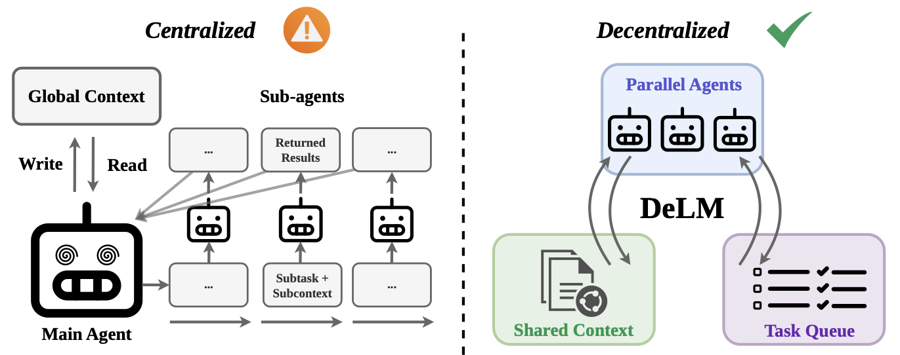

Unlike centralized multi-agent systems, which rely on a central controller and synchronous scatter–gather coordination, DeLM lets agents coordinate asynchronously through a shared, verified context. Agents claim tasks from a queue and write back compact, verified results as they finish, making progress visible to all workers without requiring a main agent to merge, filter, and rebroadcast it.
Multi-agent systems (MAS) can scale large language model reasoning at test time by decomposing complex problems into parallel subtasks. However, most existing MAS rely on centralized orchestration, where a main agent assigns work, collects outputs, and merges results. As the number of subtasks grows, this controller becomes a communication and integration bottleneck. We propose Decentralized Language Models (DeLM), a MAS framework that decentralizes coordination through parallel agents, a shared verified context, and a task queue. Agents asynchronously claim subtasks, read accumulated progress, perform local reasoning, and write back compact verified updates. The shared context acts as a common communication substrate, enabling agents to build on one another's verified progress without routing every update through a central controller. Empirically, DeLM improves both software-engineering test-time scaling and long-context reasoning. On SWE-bench Verified, DeLM achieves the best performance across Avg.@1, Pass@2, and Pass@4, with gains of up to 10.5 percentage points over the strongest baseline, while reducing cost per task by roughly 50%. On LongBench-v2 Multi-Doc QA, DeLM achieves the highest average accuracy across four frontier model families, improving over the strongest baseline by up to 5.7 percentage points.
@misc{mao2026delm, title={Decentralized Multi-Agent Systems with Shared Context}, author={Yuzhen Mao and Azalia Mirhoseini}, year={2026}, eprint={2606.10662}, archivePrefix={arXiv}, primaryClass={cs.MA}, url={https://arxiv.org/abs/2606.10662}, }